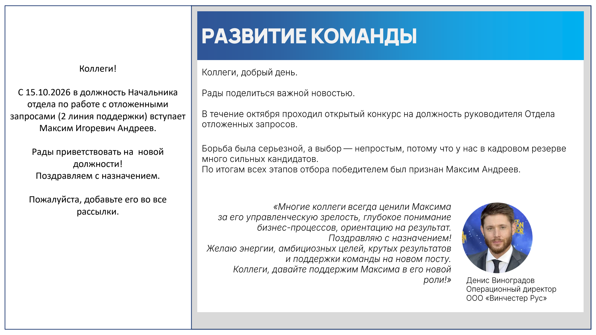

Результат важнее активности
Измеряю изменение поведения и бизнес-эффект, а не количество часов и «довольные лица» в отчёте.
Превращаю бизнес-стратегии в живые процессы, сильные команды и эффективное обучение. Фокусируюсь на работе с лидерами и управленческой культурой. Открыта к проектной работе и долгосрочным задачам — инхаус или приглашённый тренер.
Я не верю в обучение ради галочки и в soft skills, оторванные от реальной работы. Если руководитель не вовлечён, любая программа превращается в мотивационный спектакль: команда возвращается в те же процессы и к тому же поведению.
Поэтому я работаю сверху вниз. Сначала — управленческая команда: её картина мира, стиль постановки задач и обратной связи, готовность быть ролевой моделью. Затем — культура, вовлечённость, обучение. Только так изменения закрепляются, а не разваливаются через месяц.
Мой профессиональный фундамент — 9 лет в Сбере. Это была моя школа: высокие требования, сильные люди рядом и планка, которую держишь каждый день. Именно там я вживую увидела, как сильная и слабая корпоративная культура влияет на бизнес: на скорость решений, на удержание людей, на способность компании проходить изменения.
Измеряю изменение поведения и бизнес-эффект, а не количество часов и «довольные лица» в отчёте.
Работаю с процессами, ритуалами, решениями и ролевыми моделями. Плакат ничего не меняет.
Диагностика без обвинений: описываю систему, которая производит поведение, и говорю на языке бизнеса.
Нейробиология, методология и управленческие модели — в понятных схемах, кейсах и решениях.
Каждое направление — про задачи бизнеса, механику работы и ценность результата, а не про список «услуг».
Коммуникация как продукт: с задачей, аудиторией, каналом и результатом. Не «рассылка для галочки», а управляемый диалог компании с людьми.
Культура — это то, что люди делают, когда никто не смотрит. Строю её через ритуалы, признание, события и понятные правила игры.
Веду обучение по полному циклу — от потребности до изменения поведения. Опираюсь на педагогический дизайн и принципы принятия решений: так, чтобы знание переходило в навык, а навык — в рабочий результат.
Смотрю на реальные процессы, а не на презентации о них. Нахожу ограничители, которые мешают команде выполнять цели, и перевожу их в план действий.
Скорость выхода новичка на результат и качество экспертного голоса компании — это управляемые процессы, а не удача.
Тимбилдинг, конкурс или welcome-тренинг я собираю как механику: с гипотезой, целью, обоснованием из нейробиологии и измеримым эффектом. Не «чтобы повеселились», а чтобы команда что-то поняла про себя и друг друга.
Зачем именно это событие команде: сплочение, снятие стресса, доверие, принятие норм.
Формат, роли, правила, физическая активность, ритуалы признания.
Что участники понимают про себя и друг друга — и как это переносится в работу.
Обратная связь, наблюдение за поведением и изменения в команде после.
Кейс-демонстрация подхода · название и детали изменены
Формат адаптируется под задачу: от сплочения отдела до снижения стресса после тяжёлого квартала.
Каждый кейс — авторская механика на реальной практике. Названия компаний, имена, данные и цифры изменены. Материалы не содержат документов под NDA.
Роль: методология диагностики, интервью, анализ, презентация собственнику
Роль: методология «5 функций × 3 роли», наблюдение в поле, заключение и критерии для собственника
Роль: диагностика, архитектура программы, сценарии, проведение, отчёт
Роль: сценарий, фасилитация, работа с сопротивлением, закрепление практики
Роль: аудит переписок, стандарт, примеры, обучение, закрепление
Роль: идея и принципы, критерии отбора, координация пула
Роль: концепция тренажёра, сценарии кейсов, структура SCQA, фасилитация
Роль: анализ NPS, механика мероприятий, карта номинаций, мерч и награды
Роль: концепция формата, механики, организация и проведение
Роль: концепция форматов, организация, проведение
Роль: личное наставничество, погружение в реальную работу, развивающая обратная связь
Роль: разбор управленческой ситуации, развивающая обратная связь, границы
Все кейсы оформлены как «Прототип решения / Кейс-демонстрация подхода». Реальные названия клиентов, имена и конфиденциальные данные не раскрываются.
Рабочие тексты и инструменты в том виде, в котором они вышли. Где можно — отдаю целиком, чтобы вы примерили на себя. Имена и детали сохранены с разрешения; реальные сотрудники здесь не фигурируют.
Инструмент признания, который работает сильнее денег: благодарность получает не сотрудник, а его семья. Образец с плейсхолдерами — подставьте свои имена.
Дорогие [Имя Отчество родителей]!
Меня зовут [Имя, должность].
Каждый год в ноябре мы подводим итоги и выбираем лучших из лучших — тех сотрудников, чей труд, преданность делу и высокие результаты принесли нашему общему делу, городу и стране наибольшую пользу. По итогам этого года в числе абсолютных лидеров — ваш сын / ваша дочь, [Имя сотрудника].
… благодарность за воспитание, поддержку и ценности, заложенные в семье, — и признание, что у компании есть профессионал, на которого можно положиться.
С глубоким уважением и благодарностью,
[Имя]
[Название компании / подразделения]
Назначение руководителя — не кадровая рутина, а событие, которое можно превратить в признание и витрину кадрового резерва.

Административное объявление, которое не раздражает и не создаёт паники, а спокойно и точно объясняет, что делать.

Практическое руководство: как вести конспект как карту смыслов, а не переписывать книгу. Разворот тетради, цветовое кодирование, навигация.
Флагманская программа по культуре, программы для руководителей и форматы управленческой диагностики.
Корпоративная культура — не документ и не плакат. Её каждый день строят сотрудники, глядя на ролевую модель руководителя.
Программа соединяет управленческую команду и сотрудников: лидеры учатся транслировать ценности через решения и обратную связь, команды — видеть свой вклад в культуру и брать ответственность за поведение.
Формат: воркшопы + практика + трекеры поведения + замеры до/после.
Управленческий имидж и репутация внутри компании: как лидер говорит, принимает решения и влияет на доверие команды.
Как физиология стресса влияет на решения и KPI и что делать руководителю, когда команда в «красной зоне».
Три формата под разные задачи: продажи, процессы и управленческая культура. Отдельно — сборка и настройка воронки продаж.
Смотрю на реальный день руководителя изнутри: пять функций управления, три роли, тайминг и делегирование. Превращаю «эмоции о людях» в нормальный запрос на команду.
Переход от контроля к развитию: как давать обратную связь и растить самостоятельность команды.
Слайды, которые помогают думать: структура учебного слайда, принципы визуальной подачи, примеры «до / после» и шаблоны.
Инхаус, приглашённый эксперт или передача методики команде. Выбор зависит от задачи и горизонта.
Погружаюсь в контекст и строю систему вдолгую.
Ключевые роли, где нужен человек, который держит культуру и обучение как единую систему.
Прихожу под задачу и оставляю результат и инструменты команде.
Когда нужен внешний взгляд, методология и запуск без раздувания штата.
Отдаю не сценарий, а работающую систему — под вашу компанию.
Что можно взять
Форматы передачи
Методика авторская. В том, что она сработает так же, — не обещаю: ценность именно в адаптации под ваш контекст. Объём и условия — по договорённости.
Я выступала много и регулярно: welcome-тренинги, ежемесячные активы менеджеров, награждения, тренинги по продажам и диалогам. И не только сама — готовила к публичным выступлениям других. Для меня выйти к аудитории — не проблема, а привычная часть работы.
Реальный пример из практики: на welcome-тренинге я объясняла новичкам нормы быта так, чтобы это было понятно, не обидно и по-человечески. Тема, о которой обычно молчат или шутят, — и с ней можно работать спокойно.
Формат: welcome-тренинг, адаптация, культура быта. Показывает умение говорить о деликатном прямо и без конфуза.
Регулярные выступления для новичков: адаптация, культура, правила игры. Постоянная аудитория, живой контакт, вопросы из зала.
Большое ежемесячное собрание управленцев. Вела награждения и выступала с темами — от признания до управленческих практик.
Готовила людей к публичным выступлениям: структура, подача, работа с волнением и аудиторией.
Тренер по продажам и навыкам ведения диалога. Здесь практики было очень много — группы, отработки, разборы.
Реальные отзывы и сборные рекомендации из практики. Имена, компании и детали изменены.
«Надежда обучала меня продажам с нуля в цветочной компании. Благодаря её подходу, вниманию и заботе мне удалось легко адаптироваться в профессии и поверить в свои силы. В работе она была не просто руководителем, а настоящим наставником: умела поддержать, вдохновить, мотивировать и помочь не опускать руки даже в непростые моменты.
Именно благодаря Надежде я полюбила то, чем занимаюсь по сей день, — пусть теперь это уже не продажи, а профессия турагента. Она учила не теряться в сложных и конфликтных ситуациях, находить выход спокойно и с лёгкостью, а главное — находить индивидуальный подход к каждому человеку. Эти навыки оказались ценны не только в продажах, но и в работе с людьми в целом.
Искренне рекомендую Надежду всем, кто хочет не просто научиться продавать, а по-настоящему полюбить своё дело, раскрыть потенциал и поверить в собственные силы. Это наставник, который даёт гораздо больше, чем просто знания».
«В цифрах — индивидуальная конверсия менеджеров выросла от 40 до 150%. Команда наконец оказалась в едином информационном поле. Для меня как руководителя освободилось время на мотивацию и стратегию вместо мелкой возни».
«Надя умеет держать рамку результата и при этом не ломать людей. Она приходит с методологией, а не с готовым тренингом, и это чувствуется уже на диагностике».
«После воркшопа я впервые поняла, как давать обратную связь, не обесценивая человека. Команда стала приносить идеи, а не ждать указаний».
Расскажите контекст — команда, культура, обучение или аудит. Предложу формат, первый шаг и честно скажу, где я не лучший выбор.